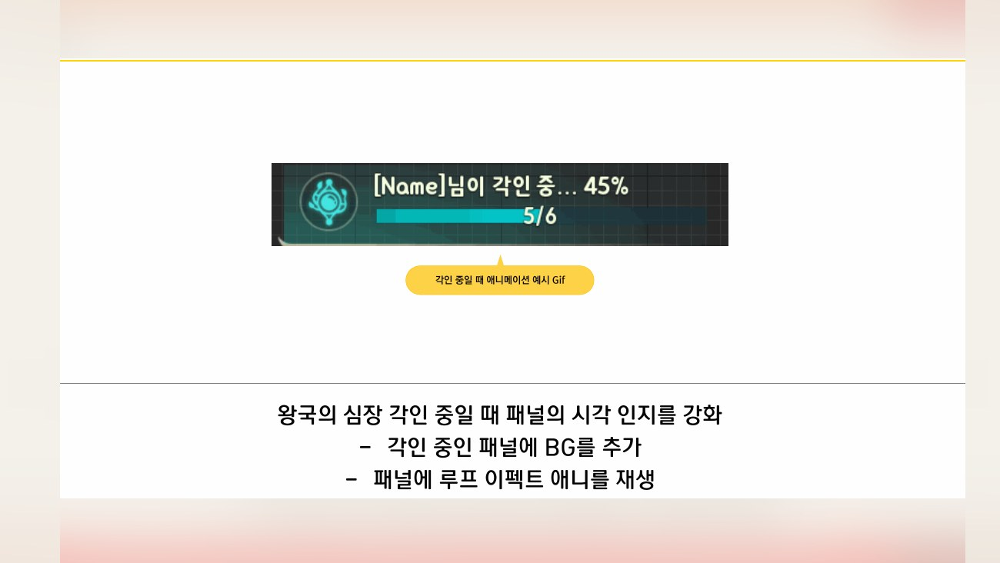
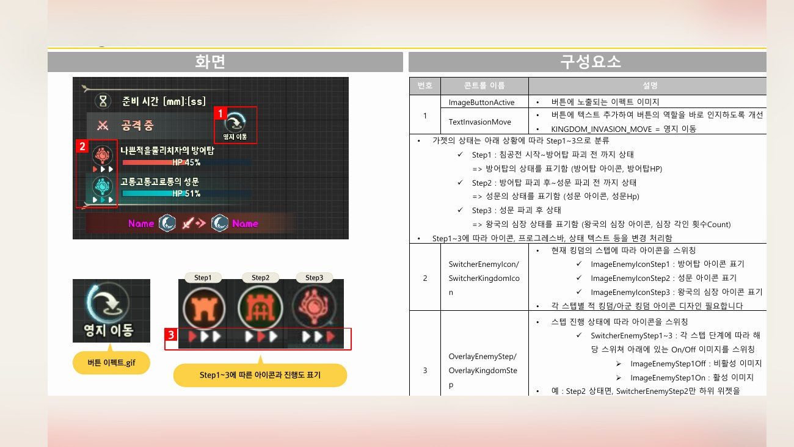
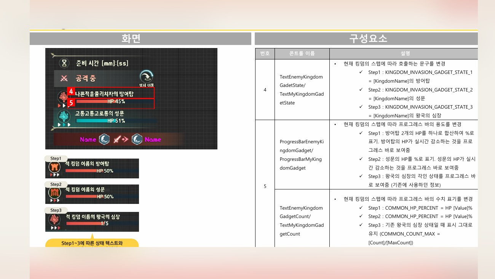
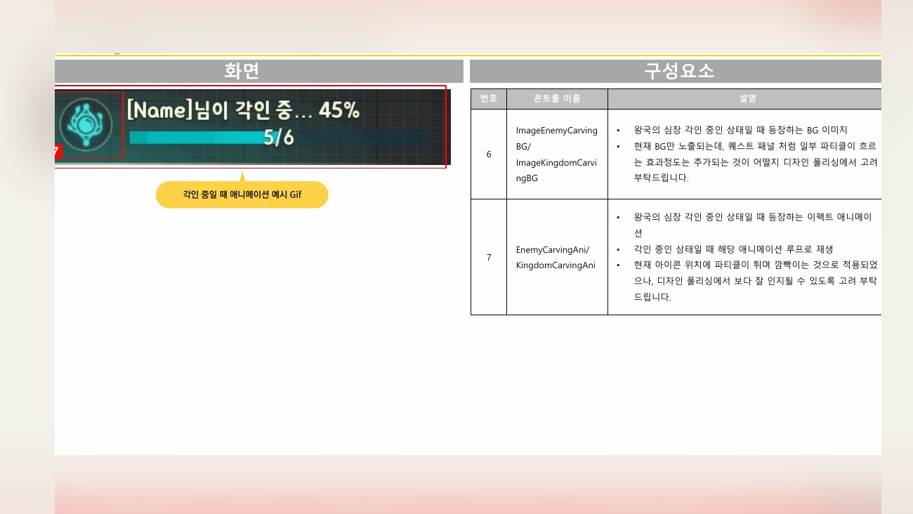
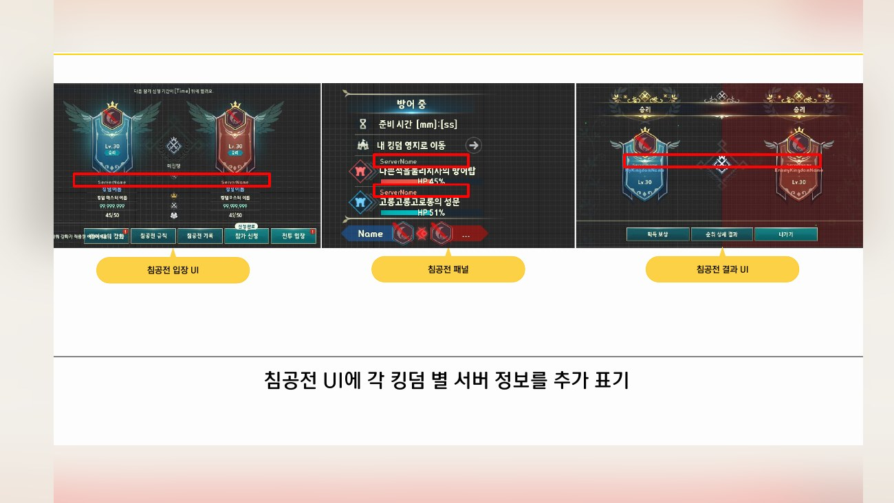
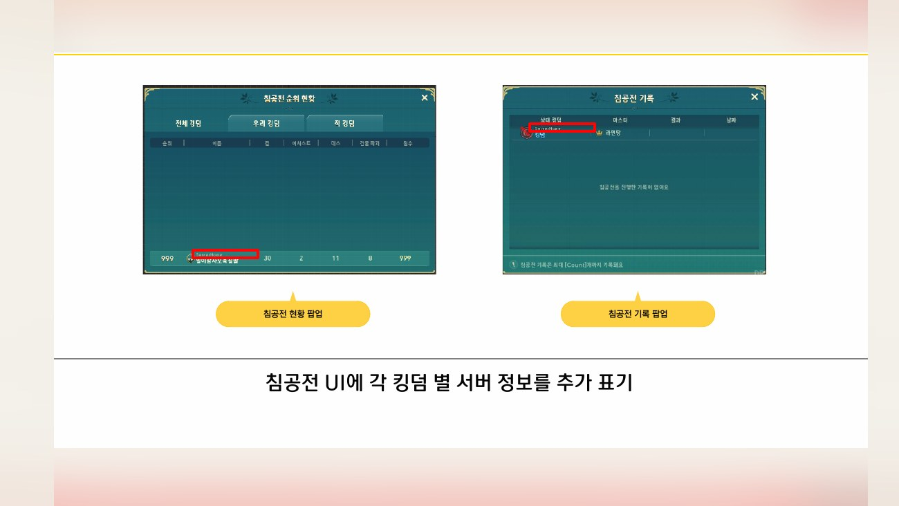
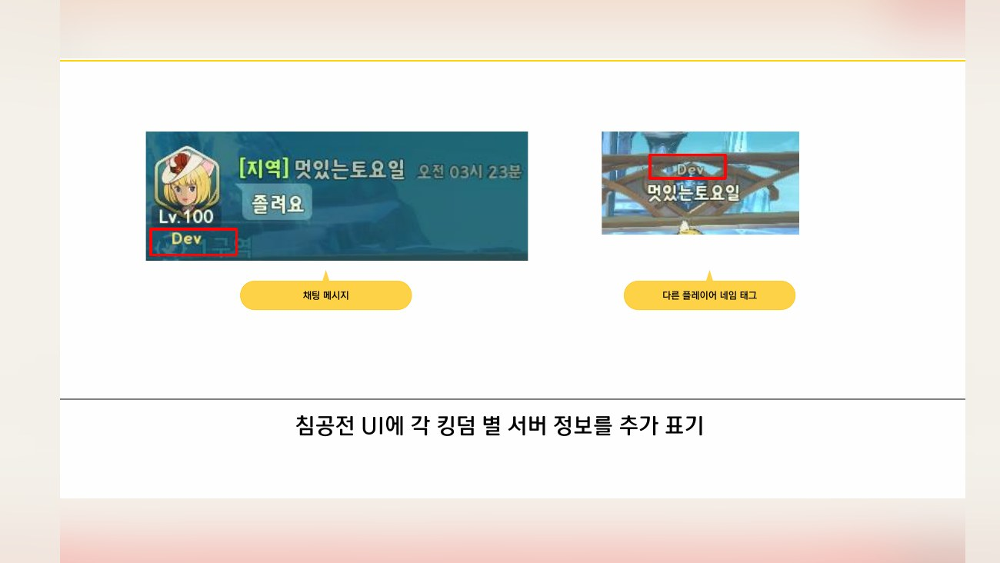
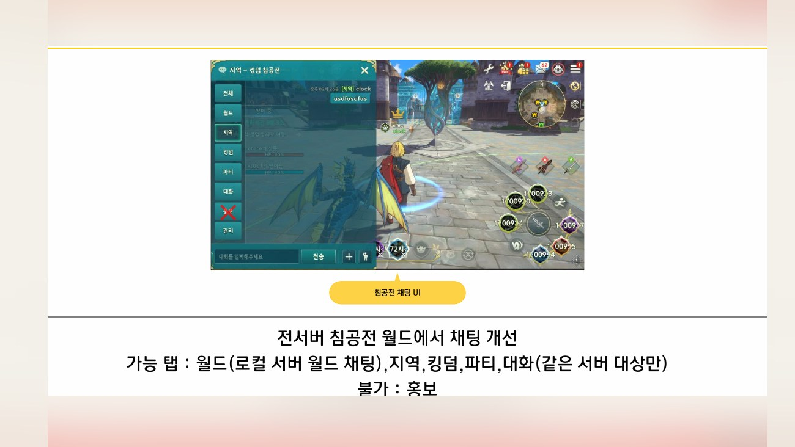

Planning Context
어떤 기획이었나
- 전투 콘텐츠는 실시간 상태, 소속 진영, 목표물 HP, 이동 가능 여부 같은 정보를 빠르게 읽어야 합니다.
- 패널 정보가 복잡하면 유저가 전투 중 중요한 상태를 놓치기 쉽습니다.
ProjectN · Invasion UX
침공전의 공격/방어 상태, 성문/방어탑 정보, 이동 팝업, 전서버 매칭 UX 등 전투 콘텐츠의 정보 패널을 정리한 사례입니다.

Planning Context
Process
Deliverables
Result
전투 중 빠르게 읽어야 하는 상태 정보를 기준화하고, 패널/팝업/이동 조건을 문서로 정리했습니다.
Deliverable Captures
원본 문서는 포함하지 않고, 포트폴리오 확인용으로 일부 페이지만 이미지화했습니다. 슬라이드 마스터/상하단 영역은 흐림 처리했습니다.







